Tahapan Integrasi VT-Web
- Mendapatkan URL VT-Web
- Tes Transaksi
- Status Transaksi
- Menangani Notifikasi
Mendapatkan Redirect URL
Pada tahap ini, kita akan mencoba memperoleh halaman pembayaran VT-Web untuk suatu pemesanan.
Setidaknya ada 3 informasi yang dibutuhkan untuk mendapatkan halaman pembayaran VT-Web, yaitu:
server key- ID transaksi
- Nominal transaksi
Contoh kode PHP berikut digunakan untuk mengakses halaman pembayaran VT-Web senilai Rp. 10.000,00.
<?php
include_once('Veritrans.php');
// Use sandbox account
Veritrans_Config::$isProduction = false;
// Set our server key
Veritrans_Config::$serverKey = '<your server key>';
// Fill transaction data
$transaction = array(
"vtweb" => array (
"credit_card_3d_secure" => true,
),
'transaction_details' => array(
'order_id' => rand(),
'gross_amount' => 10000, // no decimal allowed for creditcard
)
);
$vtweb_url = Veritrans_Vtweb::getRedirectionUrl($transaction);
// Redirect
header('Location: ' . $vtweb_url);
?>
Contoh kode di atas memanfaatkan library Veritrans-PHP yang dapat diunduh di [ Github | Zip ].
File Veritrans.php diasumsikan berada pada direktori yang sama dengan kode sumber.
Veritrans_Config::$isProduction diubah menjadi false karena kita melakukan tes di akun Sandbox.
Nilai server_key sudah dijelaskan di Langkah Awal - Persiapan Awal
Secara default, semua metode pembayaran yang anda miliki akan ditampilkan di halaman VT-Web. Jika anda bermaksud menentukan metode pembayaran yang ditampilkan, ikuti petunjuk di VT-Web - Fitur Tambahan.
Halaman Pembayaran VT-Web dapat diperoleh dengan memanggil fungsi Veritrans_Vtweb::getRedirectionUrl dimana data transaksi adalah argumennya. Jika proses ini berhasil, pembeli akan dialihkan menuju URL tersebut.
Berikut adalah contoh tampilan halaman pembayaran VT-Web hasil kode di atas:
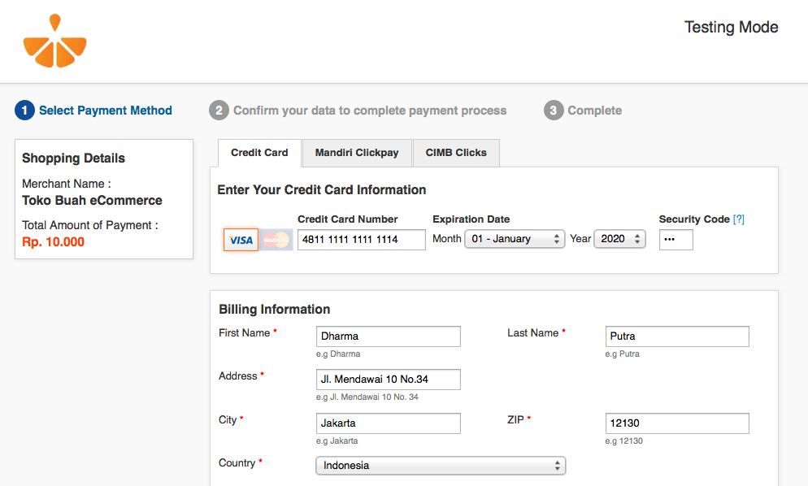
Menambahkan Informasi Transaksi (Opsional)
Merchant dapat menambahkan berbagai data tambahan ke dalam variabel transaksi $transaction, seperti data pembeli, data pesanan barang, dan metode pembayaran. Data tambahan ini akan mempengaruhi halaman pembayaran VT-Web dan log transaksi pada MAP (Merchant Administration Portal).
Sebagian besar field pada form halaman VT-Web akan otomatis terisi dan Informasi terkait daftar barang serta lokasi pengiriman akan ditampilkan.
Keterangan dan struktur lengkap data transaksi dalam bentuk JSON dapat dilihat di Veritrans API Reference.
Contoh kode PHP yang mengikutsertakan semua data transaksi adalah sebagai berikut:
<?php
include_once('Veritrans.php');
// Set our server key
Veritrans_Config::$serverKey = '<your server key>';
// Use sandbox account
Veritrans_Config::$isProduction = false;
// Required
$transaction_details = array(
'order_id' => rand(),
'gross_amount' => 145000, // no decimal allowed for creditcard
);
// Opsional
$item1_details = array(
'id' => 'a1',
'price' => 50000,
'quantity' => 2,
'name' => "Apel"
);
// Opsional
$item2_details = array(
'id' => 'a2',
'price' => 45000,
'quantity' => 1,
'name' => "Jeruk"
);
// Opsional
$item_details = array ($item1_details, $item2_details);
// Opsional
$billing_address = array(
'first_name' => "Andri",
'last_name' => "Litani",
'address' => "Mangga 20",
'city' => "Jakarta",
'postal_code' => "16602",
'phone' => "081122334455",
'country_code' => 'IDN'
);
// Opsional
$shipping_address = array(
'first_name' => "Obet",
'last_name' => "Supriadi",
'address' => "Manggis 90",
'city' => "Jakarta",
'postal_code' => "16601",
'phone' => "08113366345",
'country_code' => 'IDN'
);
// Opsional
$customer_details = array(
'first_name' => "Andri",
'last_name' => "Litani",
'email' => "andri@litani.com",
'phone' => "081122334455",
'billing_address' => $billing_address,
'shipping_address' => $shipping_address
);
// Fill transaction details
$transaction = array(
'payment_type' => 'vtweb',
'vtweb' => array(
'credit_card_3d_secure' => true,
),
'transaction_details' => $transaction_details,
'customer_details' => $customer_details,
'item_details' => $item_details,
);
$vtweb_url = Veritrans_Vtweb::getRedirectionUrl($transaction);
// Go to VT-Web page
header('Location: ' . $vtweb_url);
?>
Berikut adalah contoh tampilan halaman pembayaran VT-Web hasil kode di atas.
Perlu diperhatikan bahwa field pada detail belanja sudah otomatis terisi.
Selain itu, informasi terkait daftar barang dan alamat pengiriman juga ditampilkan pada halaman VT-Web.
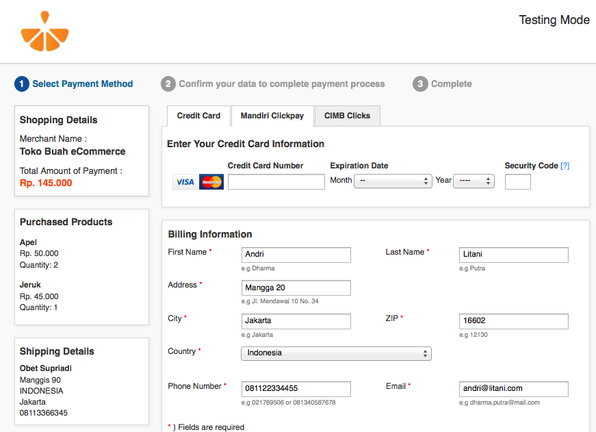
Error saat Request URL VT-Web
Pada beberapa kondisi, request URL pembayaran VT-Web bisa gagal. Penyebab gagalnya request URL VT-Web dapat dilihat dari status code. Status code yang umumnya muncul adalah:
| Kode Error | Keterangan |
|---|---|
400 Validation error |
Format atau konten data transaksi tidak valid. Contoh: Salah tipe variabel, metode pembayaran tidak valid. |
401 Access Denied |
Client atau server key tidak valid. |
402 Access Denied |
Merchant tidak memiliki izin menggunakan metode pembayaran tertentu. |
406 Duplicate Order ID |
Order ID telah digunakan dan dibayar sebelumnya. |
410 Account Inactive |
Akun merchant tidak aktif dalam waktu lama |
Daftar status code lengkap dapat dilihat di Referensi - Status Code.
Jika mengalami kesulitan, silahkan hubungi kami.
Tes Transaksi
Di tahap ini, kita akan mencoba melakukan tes transaksi di VT-Web.
Mohon gunakan daftar Kredensial Uji Coba untuk melakukan tes transaksi.
Perhatian: Perhatian:
Pembayaran dengan kredensial sebenarnya akan menghasilkan error di Sandbox Environment.
Credit Card
Kita akan mencoba transaksi kartu kredit 3D Secure yang berhasil.
Informasi kartu kredit uji coba yang dapat digunakan adalah:
| Jenis | Visa |
|---|---|
| Nomor Kartu | 4811 1111 1111 1114 |
| CVV | 123 |
| Exp. Month | 01 |
| Exp. Year | 2020 |
Mengacu pada petunjuk di tab Mendapatkan URL VT-Web, tampilan halaman VT-Web adalah sebagai berikut:
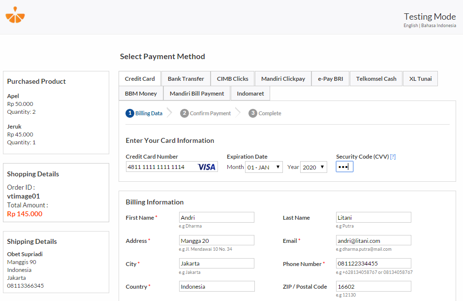
Tekan tombol konfirmasi dan halaman konfirmasi pembayaran VT-Web akan ditampilkan.

Tekan tombol Pay, lalu anda akan dialihkan ke halaman 3D secure. Halaman autentikasi akan muncul, pelanggan cukup menekan tombol autentikasi. Berikut adalah contoh tampilan halaman autentikasi 3D secure pada sandbox.
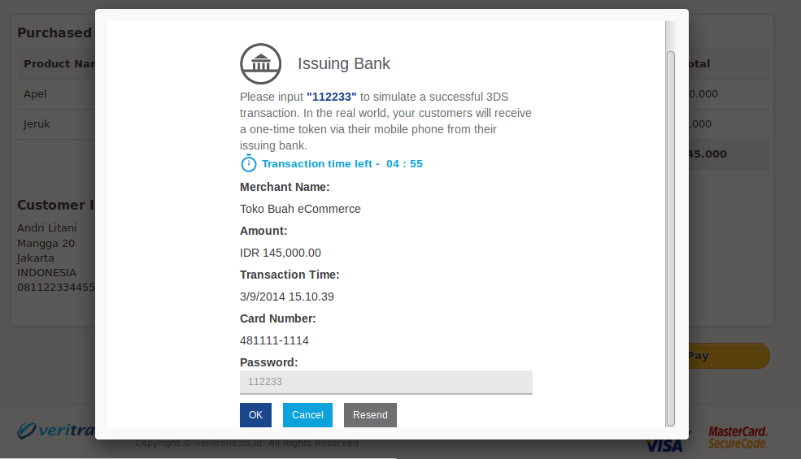
Setelah proses autentikasi selesai dilakukan, hasil pembayaran akan muncul.
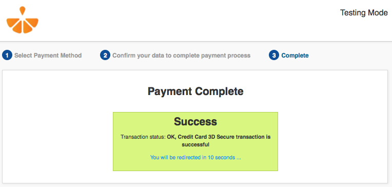
Permata Virtual Account
Kami akan mencoba transaksi Virtual Account yang berhasil.
Mengacu pada petunjuk di tab Mendapatkan URL VT-Web, tampilan halaman VT-Web adalah sebagai berikut:
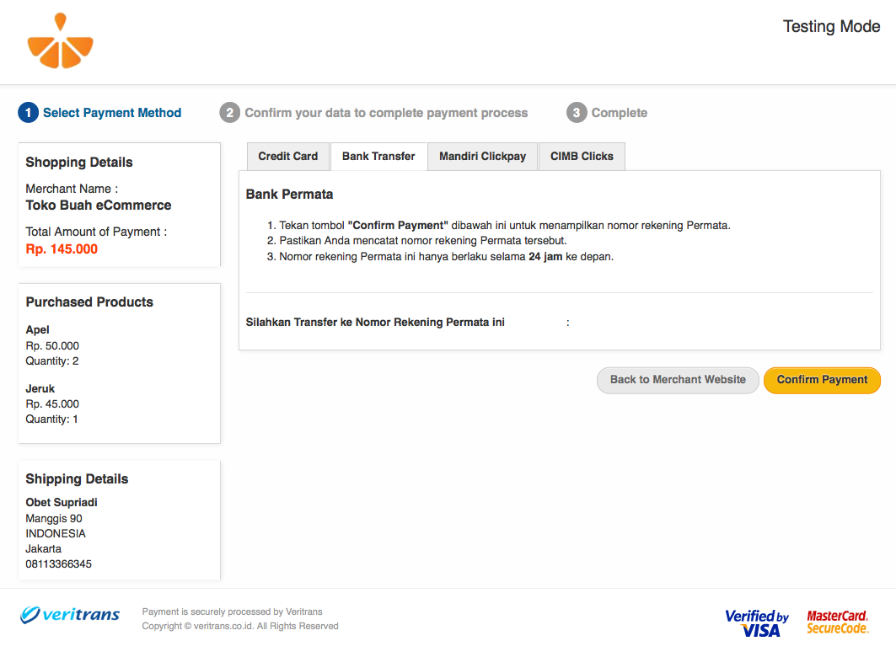
Klik tombol Confirm Payment untuk menampilkan nomor rekening virtual account.
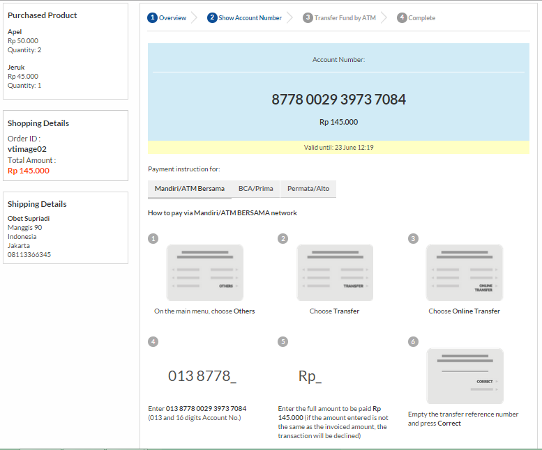
Info:
Info:
Catat nomor VA pembayaran anda untuk melakukan pembayaran melalui ATM atau layanan internet banking.
Sampai tahap ini, transaksi sudah tersimpan di MAP dengan status pending.
Status transaksi akan berubah menjadi success saat pelanggan anda selesai melakukan pembayaran.
Simulasi Pembayaran
Untuk memudahkan proses pembayaran, kami menyediakan simulator pembayaran untuk Sandbox Environment.
Masukan nomor virtual account yang didapat sebelumnya untuk memeriksa apabila ada transaksi pending.
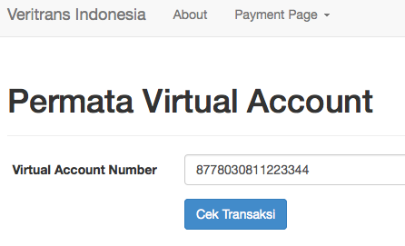
Apabila ada transaksi pending, anda dapat melakukan simulasi pembayaran.
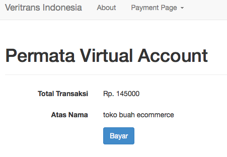
Simulasi pembayaran Permata Virtual Account berhasil.
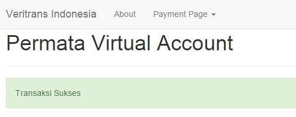
Mandiri clickpay
Kami akan mencoba transaksi Mandiri clickpay yang berhasil.
Informasi Mandiri clickpay uji coba yang dapat digunakan adalah:
| Fields | Value |
|---|---|
| Card Number | 4111 1111 1111 1111 |
| Accept Token | 000 000 |
Mengacu pada petunjuk di tab Mendapatkan URL VT-Web, tampilan halaman VT-Web adalah sebagai berikut:
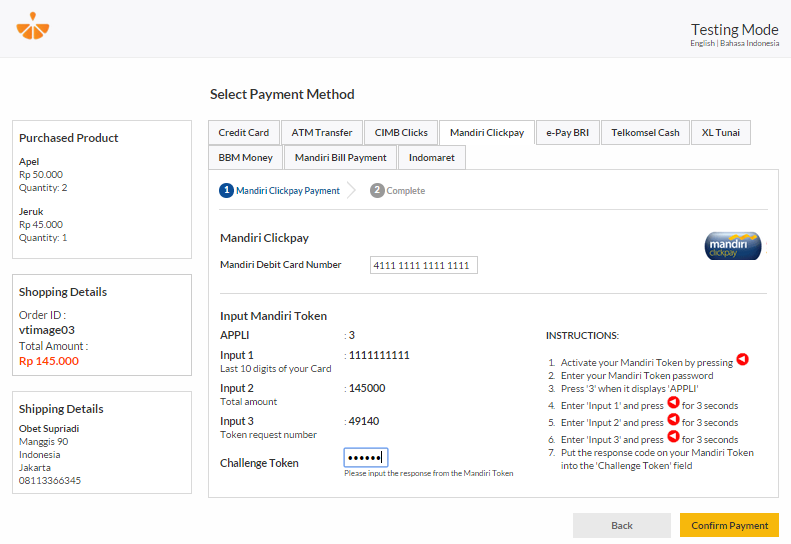
Klik tombol Confirm Payment dan halaman konfirmasi pembayaran VT-Web akan ditunjukkan.
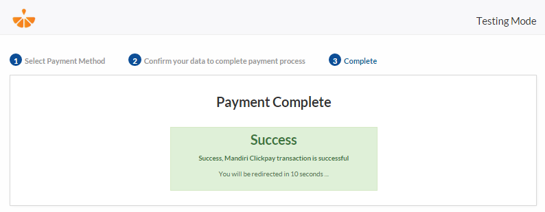
CIMB Clicks
Kami akan mencoba transaksi CIMB Clicks yang berhasil.
Mengacu pada petunjuk di tab Mendapatkan URL VT-Web, tampilan halaman VT-Web adalah sebagai berikut:
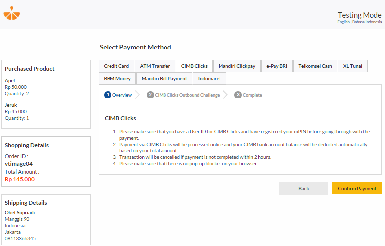
Klik tombol Confirm Payment dan anda akan dialihkan ke halaman pembayaran testing CIMB.
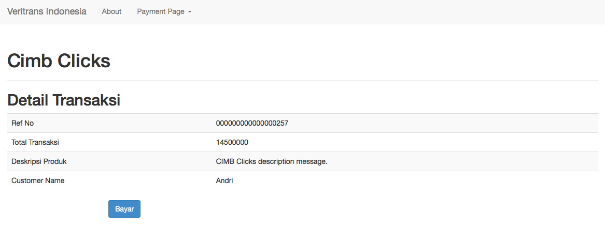
Ketika petunjuk transaksi CIMB Clicks diselesaikan, klik tombol Bayar dan halaman konfirmasi pembayaran akan ditampilkan.
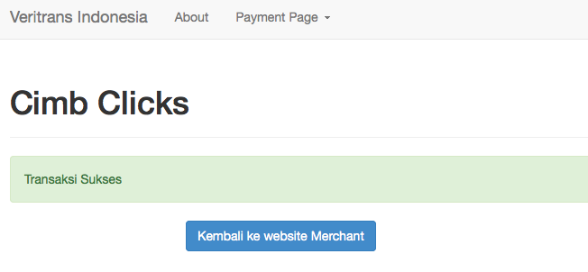
e-Pay BRI
Kami akan mencoba transaksi e-Pay BRI yang berhasil.
Mengacu pada petunjuk di tab Mendapatkan URL VT-Web, tampilan halaman VT-Web adalah sebagai berikut:
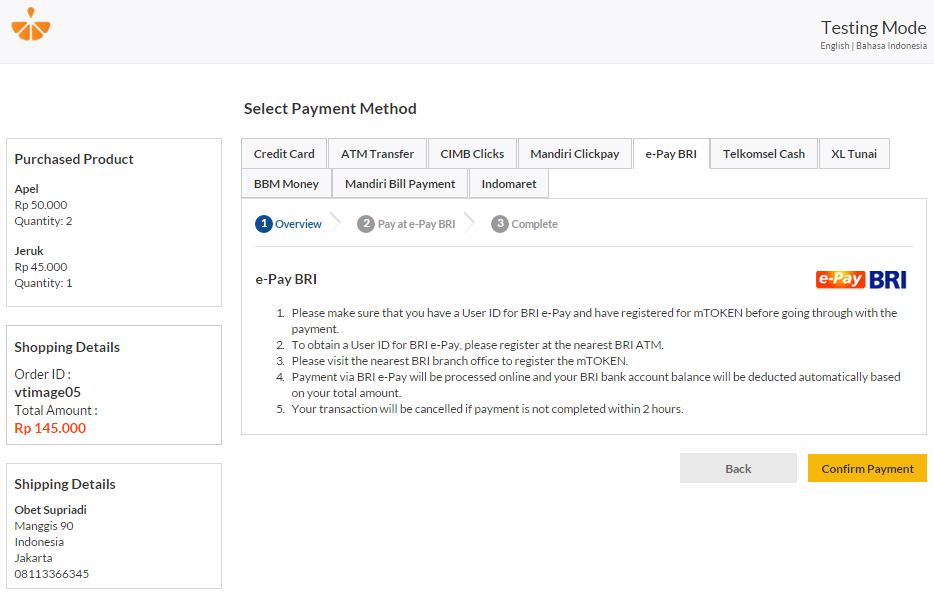
Klik tombol Confirm Payment dan anda akan dialihkan ke halaman pembayaran testing e-Pay BRI.
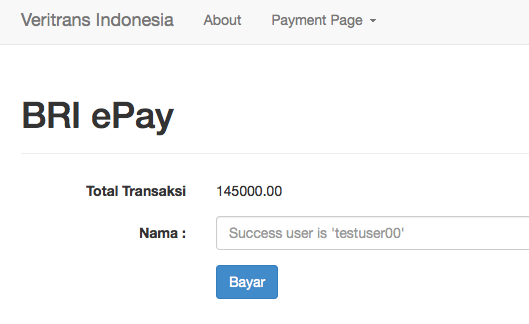
Ketika petunjuk transaksi e-Pay BRI diselesaikan, klik tombol Bayar dan halaman konfirmasi pembayaran akan ditampilkan.
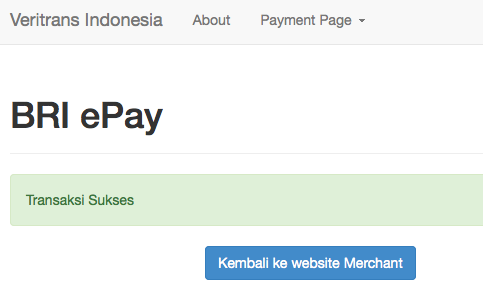
Telkomsel Cash
Kami akan mencoba transaksi Telkomsel Cash yang berhasil.
Informasi Telkomsel Cash uji coba yang dapat digunakan adalah:
| Fields | Value |
|---|---|
| Accept Token | 0811 1111 11 |
Mengacu pada petunjuk di tab Mendapatkan URL VT-Web, tampilan halaman VT-Web adalah sebagai berikut:
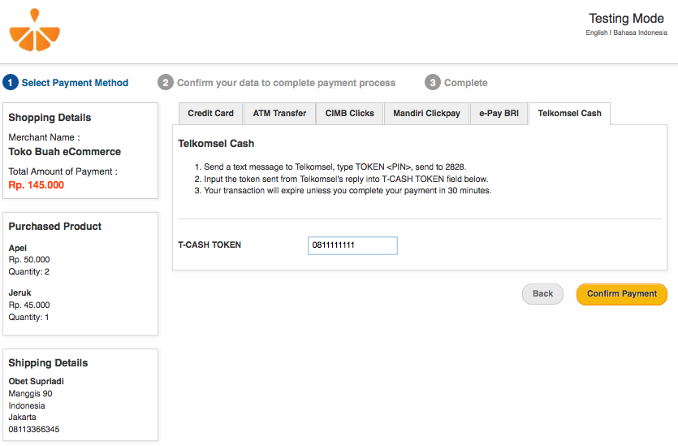
Klik tombol Confirm Payment, hasil status pembayaran VT-Web akan ditampilkan.
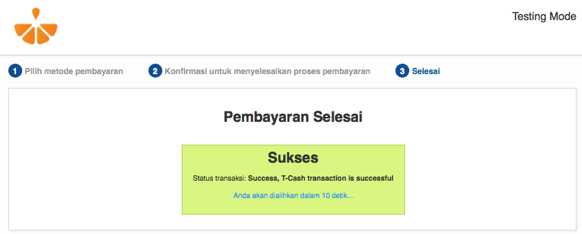
XL Tunai
Kami akan mencoba transaksi XL Tunai yang berhasil.
Mengacu pada petunjuk di tab Mendapatkan URL VT-Web, tampilan halaman VT-Web adalah sebagai berikut:
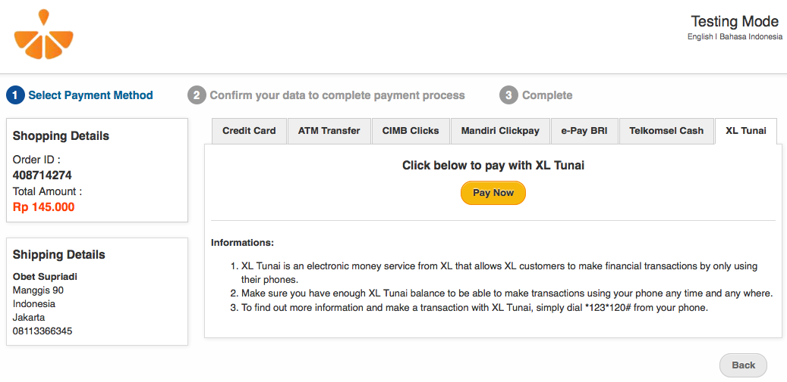
Klik tombol Pay Now untuk menampilkan nomor order ID XL tunai, total transaksi, dan cara pembayaran.
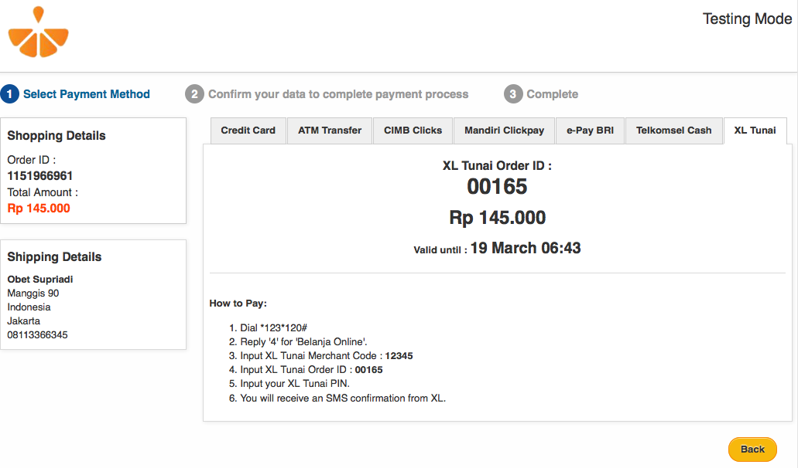
Sampai tahap ini, transaksi sudah tersimpan di MAP dengan status pending.
Status transaksi akan berubah menjadi success saat pelanggan anda selesai melakukan pembayaran.
Simulasi Pembayaran
Untuk memudahkan proses pembayaran, kami menyediakan simulator pembayaran untuk Sandbox Environment.
Input 12345 sebagai merchant id uji coba and Nomor order ID XL Tunai yang didapat sebelumnya untuk memeriksa apabila ada transaksi pending.
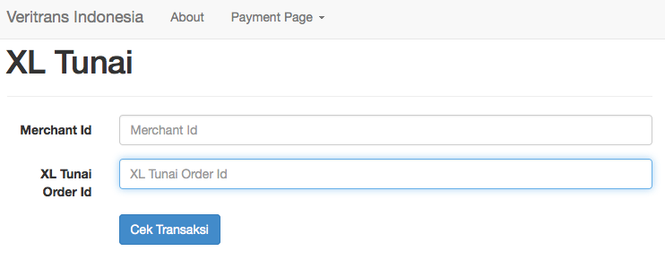
Apabila ada transaksi pending, anda dapat melakukan simulasi pembayaran.
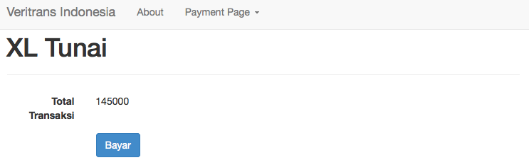
Simulasi pembayaran XL Tunai berhasil.
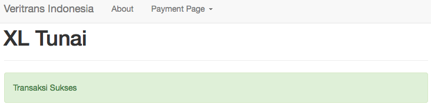
BBM Money: Desktop
Kami akan mencoba transaksi BBM Money yang berhasil melalui Desktop.
Mengacu pada petunjuk di tab Mendapatkan URL VT-Web, tampilan halaman VT-Web adalah sebagai berikut:
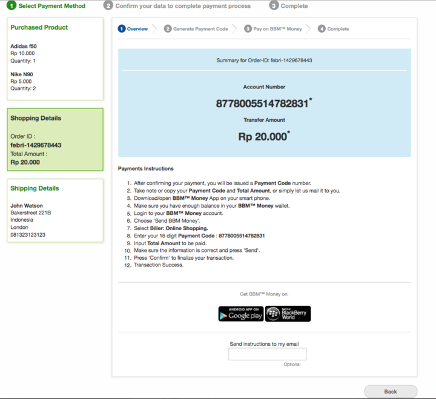
Info:
Note:
Catat nomor akun dan lakukan pembayaran melalui apps BBM Money.
Sampai tahap ini, transaksi sudah tersimpan di MAP dengan status pending.
Status transaksi akan berubah menjadi success saat pelanggan anda selesai melakukan pembayaran.
BBM Money: Mobile
Kami akan mencoba transaksi BBM Money yang berhasil melalui mobile web.
Halaman VT-Web yang ditampilkan adalah sebagai berikut:
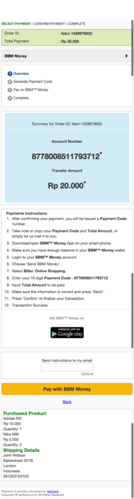
klik 'Pay with BBM Money' dan pelanggan akan dialihkan ke Apps BBM Money untuk menyelesaikan transaksi.
Info:
Note:
Pelanggan butuh mengunduh aplikasi BBM Money dari Google Play Store untuk menyelesaikan pembayaran.
Sampai tahap ini, transaksi sudah tersimpan di MAP dengan status pending.
Status transaksi akan berubah menjadi success saat pelanggan anda selesai melakukan pembayaran.
Mandiri Bill Payment
Kami akan mencoba transaksi Mandiri Bill Payment yang berhasil.
Mengacu pada petunjuk di tab Mendapatkan URL VT-Web, tampilan halaman VT-Web adalah sebagai berikut:
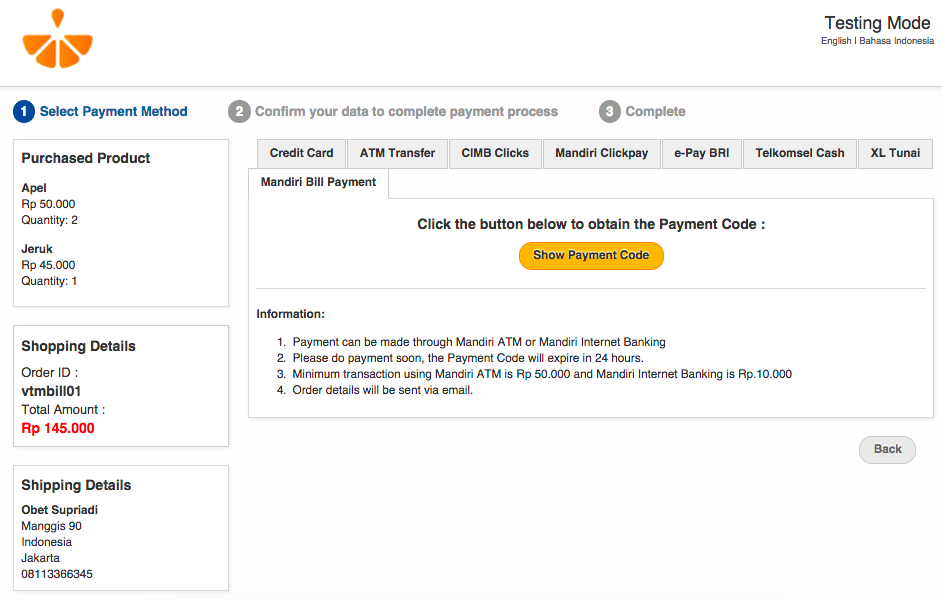
Klik tombol Show Payment Code untuk menampilkan company code dan nomor payment code.

Info:
Note:
Catat company code dan nomor payment code, kemudian lakukan pembayaran melalui channel pembayaran Mandiri.
Sampai tahap ini, transaksi sudah tersimpan di MAP dengan status pending.
Status transaksi akan berubah menjadi success saat pelanggan anda selesai melakukan pembayaran.
Simulasi Pembayaran
Untuk memudahkan proses pembayaran, kami menyediakan simulator pembayaran untuk Sandbox Environment.
Input nomor payment code yang didapat sebelumnya untuk memeriksa apabila ada transaksi pending.
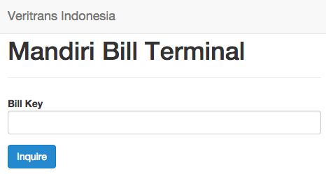
Apabila ada transaksi pending, anda dapat melakukan simulasi pembayaran.
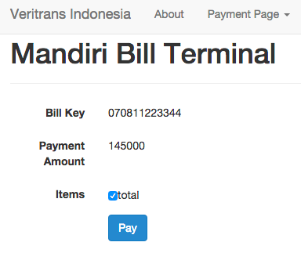
Indomaret
Kita akan mencoba transaksi Indomaret yang berhasil.
Mengacu pada petunjuk di tab Mendapatkan URL VT-Web, tampilan halaman VT-Web adalah sebagai berikut:
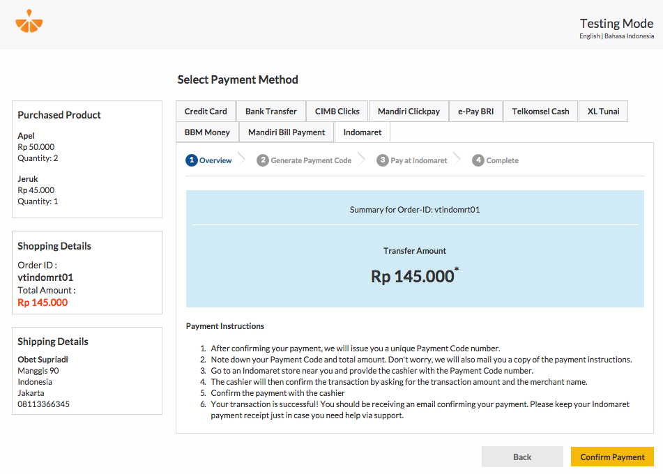
Klik tombol Confirm Payment untuk menampilkan kode pembayaran dan instruksi cara melakukan pembayaran.
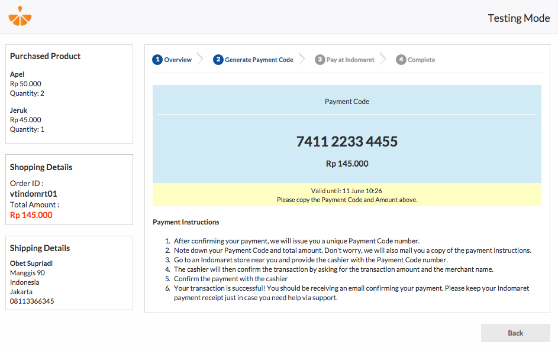
Info:
Note:
Catat kode pembayaran dan lakukan pembayaran melalui kasir Indomaret terdekat.
Sampai tahap ini, transaksi sudah tersimpan di MAP dengan status pending.
Status transaksi akan berubah menjadi success saat pelanggan anda selesai melakukan pembayaran.
Simulasi Pembayaran
Untuk memudahkan proses pembayaran, kami menyediakan simulator pembayaran untuk Sandbox Environment.
Masukan nomor kode pembayaran yang di dapat sebelumnya untuk memeriksa apabila ada transaksi pending.
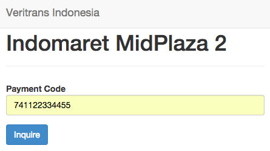
Apabila ada transaksi pending, anda dapat melakukan simulasi pembayaran.
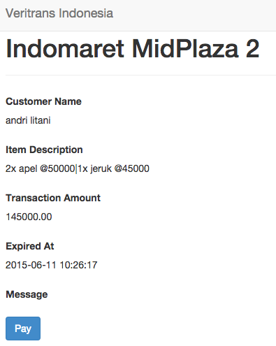
Indosat Dompetku
Kami akan mencoba transaksi Indosat Dompetku yang berhasil.
Nomor Indosat Dompetku yang dapat digunakan adalah:
| Fields | Value |
|---|---|
| Nomor Berhasil | 08123456789 |
Mengacu pada petunjuk di tab Mendapatkan URL VT-Web, tampilan halaman VT-Web adalah sebagai berikut:
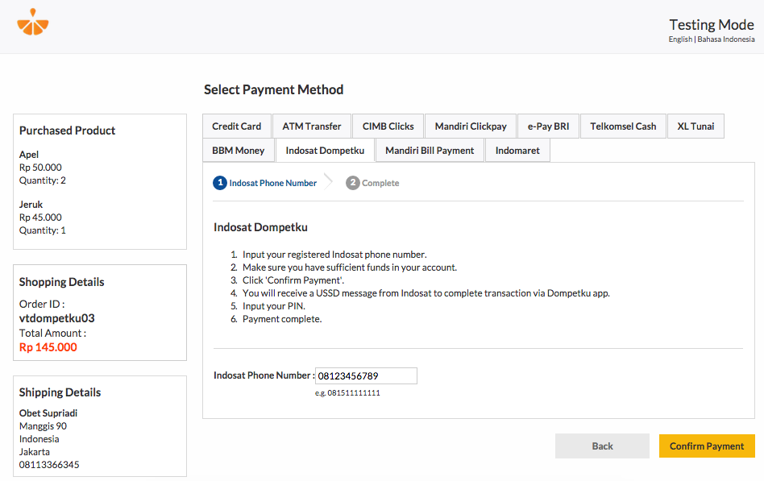
Klik tombol Confirm Payment, hasil status pembayaran VT-Web akan ditampilkan.
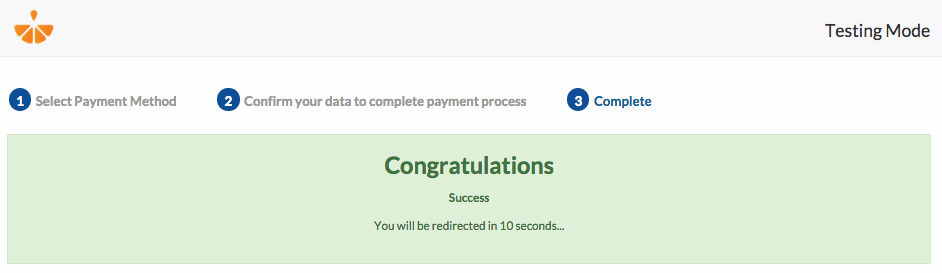
Status Transaksi
Veritrans menyediakan dua cara agar merchant dapat mengetahui status transaksi.
- Email & HTTP Notification
- Merchant Administration Portal
Email Notification
Setting notifikasi email dapat dikonfigurasi di Settings - Email Notification di MAP.
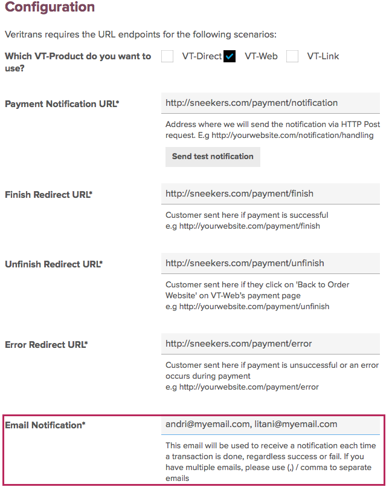
Info:
Info:
Pakai koma sebagai pemisah apabila email lebih dari satu. Contoh : Andri@myemail.com, litani@myemail.com
HTTP(S) POST Notification
Notifikasi melalui HTTP(S) POST akan dikirimkan ke server merchant ketika pelanggan menyelesaikan proses pembayaran. Anda dapat memakai HTTP(S) POST notification untuk meng-update status pembayaran atau mengirimkan barang transaksi secara langsung.
Endpoint notifikasi bisa di-set melalui MAP, di halaman Settings - Configuration.
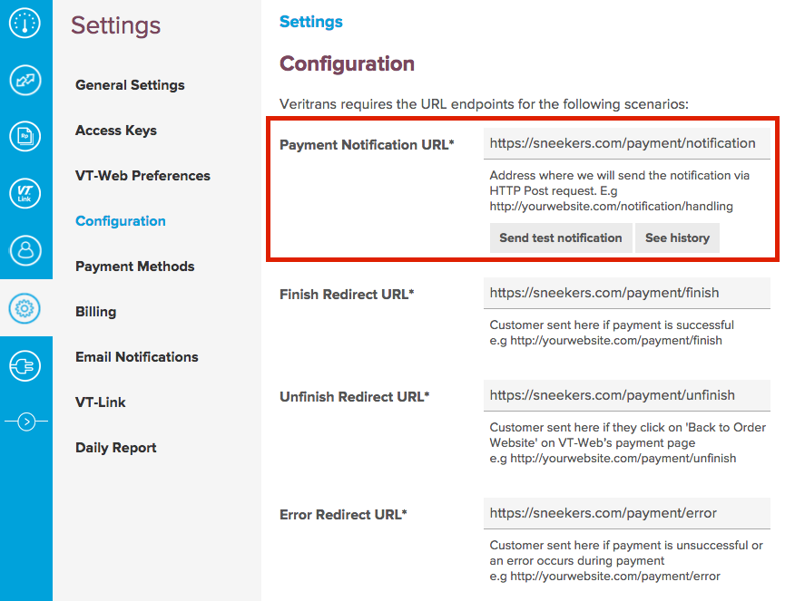
Peringatan: Note:
Pastikan alamat notifikasi HTTP POST yang anda masukan tidak berupa alamat localhost.
Isi dari notifikasi HTTP(S) POST berupa JSON object.
Contoh notifikasi yang dikirimkan adalah sebagai berikut:
Credit Card
Contoh Notifikasi HTTP untuk transaksi kartu kredit yang berhasil:
{
"status_code": "200",
"status_message": "Veritrans payment notification",
"transaction_id": "3a351906-2a89-47b6-8b88-d890e626ba4d",
"masked_card": "481111-1114",
"order_id": "Test-Order1",
"payment_type": "credit_card",
"transaction_time": "2015-04-27 14:29:32",
"transaction_status": "capture",
"fraud_status": "accept",
"approval_code": "1430119773366",
"signature_key": "e192d421a3a4ad5c53d866d6591d75c3982e4019cd6f8954a0aa0d9387af44b983ca182c9c8b0fdfd5ba1ec2d10057f37b6dfb86742f5657800fa82282993e68",
"bank": "mandiri",
"eci": "05",
"gross_amount": "145000.00"
}
Info:
Note:
Untuk informasi lebih lanjut mengenai respon pembayaran kartu kredit, silahkan mengalih ke sini.
Status Notifikasi HTTP(S) POST Yang Tersedia
| transaction_status | Definisi |
|---|---|
| capture | Transaksi berhasil dan siap untuk settlement. |
| cancel | Transaksi dibatalkan dan tidak akan diproses untuk settlement. |
| settlement | Dana transaksi berpindah dari akun pelanggan ke akun merchant. |
| deny | Transaksi ditolak oleh bank atau Sistem Deteksi Penipuan(FDS) Veritrans. |
| fraud_status | Definisi |
|---|---|
| accept | Transaksi diterima oleh FDS Veritrans. |
| challenge | Transaksi dianggap mencurigakan oleh FDS. Merchant harus menerima atau menolak transaksi secara manual. |
| deny | Transaksi ditolak oleh FDS Veritrans. |
Status Transaksi Merchant Admin Portal(MAP)
Merchant dapat memeriksa status transaksi melalui menu payments di MAP.
Contoh transaksi status yang sukses untuk pembayaran kartu kredit: 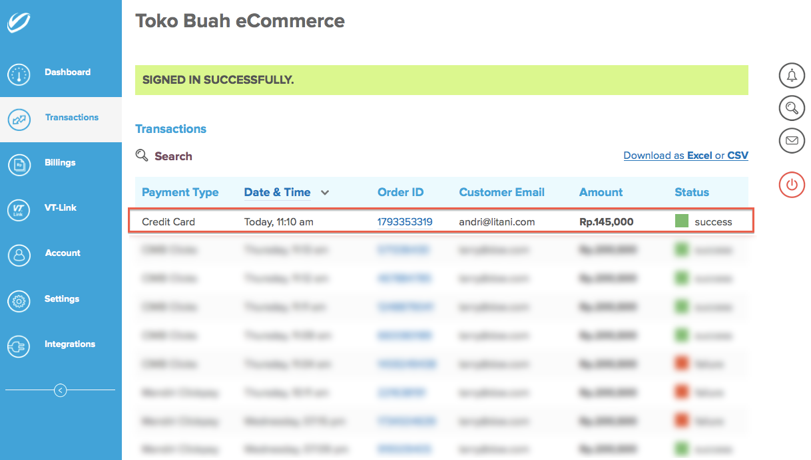
Daftar status transaksi yang tersedia di MAP untuk pembayaran Kartu Kredit adalah sebagai berikut:
| Status Transaksi | Definisi |
|---|---|
| Success | Transaksi diterima dan akan diproses untuk settlement. Beralih ke Penggunaan Dashboard untuk mengetahui lebih lanjut tentang Settlement. |
| Challenge | Transaksi kartu kredit dianggap mencurigakan oleh Sistem Deteksi Penipuan (FDS) Veritrans. Merchant harus menerima atau menolak transaksi secara manual melalui Veritrans Dashboard. Beralih ke Penggunaan Dashboard untuk mengetahui lebih lanjut tentang Fraud Management. |
| Failure | Transaksi Failure dapat diakibatkan oleh: 1. Transaksi ditolak oleh Bank. 2. Transaksi Kartu Kredit ditolak oleh FDS Veritrans. |
| Cancel | Transaksi Cancel dapat diakibatkan oleh: 1. Transaksi yang sukses dibatalkan sebelum proses Settlement. 2. Transaksi Challenge ditolak oleh merchant. |
Permata Virtual Account
Contoh Notifikasi HTTP untuk transaksi Permata Virtual Account yang berhasil:
{
"status_code": "200",
"status_message": "Veritrans payment notification",
"transaction_id": "9a31e442-951f-490d-9b9c-9e618ec98874",
"order_id": "Test-Order-2",
"payment_type": "bank_transfer",
"transaction_time": "2015-04-27 14:39:16",
"transaction_status": "settlement",
"permata_va_number": "8778003989378805",
"signature_key": "31b482e796c35153e829a85c59d831313694cd0c7cecdbb85a7a33474f431fbea75f440f57d09608ea1889a9eedd950017f1162ae37a2ec9b00084d932fb5309",
"gross_amount": "145000.00"
}
Info:
Note:
Untuk informasi lebih lanjut mengenai respon pembayaran Permata Virtual Account, silahkan mengalih ke sini.
Status Notifikasi HTTP(S) POST Yang Tersedia
| transaction_status | Definisi |
|---|---|
| pending | Transaksi belum terproses dan masi menunggu untuk diselesaikan. |
| cancel | Transaksi sudah dibatalkan. Nomor VA Permata sudah tidak valid. |
| expire | Transaksi belum diselesaikan dan sudah melewati masa berlaku. Nomor VA Permata sudah tidak valid. |
| settlement | Dana transaksi berpindah dari akun pelanggan ke akun merchant. |
Status Transaksi Merchant Admin Portal(MAP)
Merchant dapat memeriksa status transaksi melalui menu payments di MAP.
Contoh transaksi status yang sukses untuk pembayaran Permata Virtual Account: 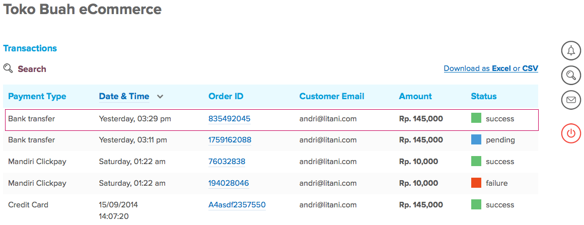
Daftar status transaksi yang tersedia di MAP untuk pembayaran Permata Virtual Account adalah sebagai berikut:
| Transaction Status | Definisi |
|---|---|
| Pending | Transaksi belum diselesaikan dan akan menghasilkan status Pending. Ketika pelanggan menyelesaikan pembayaran, status akan berubah menjadi 'success'. |
| Success | Transaksi diterima dan sudah diproses untuk settlement. Beralih ke Penggunaan Dashboard untuk mengetahui lebih lanjut tentang Settlement. |
| Failure | Transaksi Failure dapat diakibatkan oleh: 1. Transaksi ditolak oleh Bank. 2. Transaksi Pending belum dibayar dan sudah melewati masa berlaku. |
Mandiri clickpay
Contoh Notifikasi HTTP untuk transaksi Mandiri clickpay yang berhasil:
{
"status_code": "200",
"status_message": "Veritrans payment notification",
"transaction_id": "fdb6322d-2fef-42c5-a956-d6b575247f0b",
"masked_card": "411111-1111",
"order_id": "Test-Order-3",
"payment_type": "mandiri_clickpay",
"transaction_time": "2015-04-27 14:44:38",
"transaction_status": "settlement",
"approval_code": "1430120681256",
"signature_key": "6dfe98c7e8e1cc4725fa10d82e696816a04c5c0fdf819af3fef65d825b4b1cad0c024a3f1813f3cb590657d8cd3edabfb4e91dbb4376344f7460ed00637cd967",
"gross_amount": "145000.00"
}
Info:
Note:
Untuk informasi lebih lanjut mengenai respon pembayaran Mandiri clickpay, silahkan mengalih ke sini.
Status Notifikasi HTTP(S) POST Yang Tersedia
| transaction_status | Definisi |
|---|---|
| settlement | Dana transaksi berpindah dari akun pelanggan ke akun merchant. |
| deny | Transaksi ditolak oleh bank. |
Status Transaksi Merchant Admin Portal(MAP)
Merchant dapat memeriksa status transaksi melalui menu payments di MAP.
Contoh transaksi status yang sukses untuk pembayaran Mandiri clickpay: 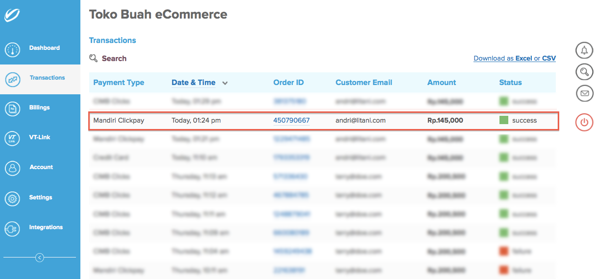
Daftar status transaksi yang tersedia di MAP untuk pembayaran Mandiri Clickpay adalah sebagai berikut:
| Transaction Status | Definisi |
|---|---|
| Success | Transaksi diterima dan sudah diproses untuk settlement. Beralih ke Penggunaan Dashboard untuk mengetahui lebih lanjut tentang Settlement. |
| Failure | Transaksi Failure dapat diakibatkan oleh: 1. Transaksi ditolak oleh Bank. |
CIMB Clicks
Contoh Notifikasi HTTP untuk transaksi CIMB Clicks yang berhasil:
{
"status_code": "200",
"status_message": "Veritrans payment notification",
"transaction_id": "47c11d2a-a8ca-4337-8681-8837ad023d65",
"order_id": "Mike-4",
"payment_type": "cimb_clicks",
"transaction_time": "2015-04-27 14:58:01",
"transaction_status": "settlement",
"approval_code": "1430121525724",
"signature_key": "d70a32353c173b543b7580f8927a3c46c547ef4486457ca8b61f44eb644e7a76cccbbd244ec6f188d3ef8cc164950a02f8350e7d305fd635795b909aa0188975",
"gross_amount": "145000.00"
}
Info:
Note:
Untuk informasi lebih lanjut mengenai respon pembayaran CIMB Clicks, silahkan mengalih ke sini.
Status Notifikasi HTTP(S) POST Yang Tersedia
| transaction_status | Definisi |
| pending | Transaksi belum terproses dan masi menunggu untuk diselesaikan. |
| cancel | Transaksi CIMB Clicks telah dibatalkan. |
| expire | Transaksi CIMB Clicks belum diselesaikan setelah 2 jam. |
| deny | Transaksi CIMB Clicks ditolak oleh bank. |
| settlement | Dana transaksi berpindah dari akun pelanggan ke akun merchant. |
Status Transaksi Merchant Admin Portal(MAP)
Merchant dapat memeriksa status transaksi melalui menu payments di MAP.
Contoh transaksi status yang sukses untuk pembayaran CIMB Clicks: 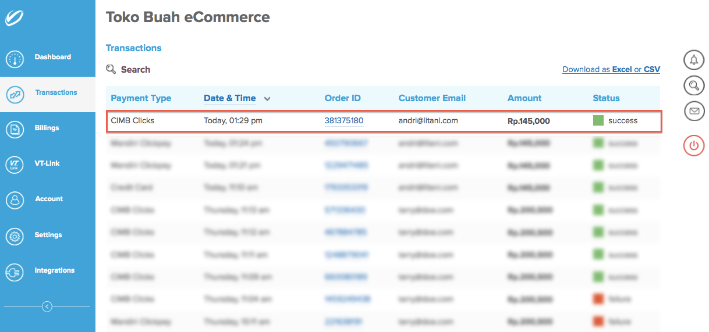
Daftar status transaksi yang tersedia di MAP untuk pembayaran CIMB Clicks adalah sebagai berikut:
| Transaction Status | Definisi |
|---|---|
| Pending | Transaksi belum diselesaikan dan akan menghasilkan status Pending. Ketika pelanggan menyelesaikan pembayaran, status akan berubah menjadi 'success'. |
| Success | Transaksi diterima dan sudah diproses untuk settlement. Beralih ke Penggunaan Dashboard untuk mengetahui lebih lanjut tentang Settlement. |
| Failure | Transaksi Failure dapat diakibatkan oleh: 1. Transaksi ditolak oleh Bank. 2. Transaksi Pending belum dibayar dan sudah melewati masa berlaku. |
e-Pay BRI
Contoh Notifikasi HTTP untuk transaksi e-Pay BRI yang berhasil:
{
"status_code": "200",
"status_message": "Veritrans payment notification",
"transaction_id": "3479c572-1d36-49c0-b5b1-22c876df411f",
"order_id": "Mike-5",
"payment_type": "bri_epay",
"transaction_time": "2015-04-27 15:04:48",
"transaction_status": "settlement",
"approval_code": "1430121888862",
"signature_key": "39ec591fbf754982e0fb83d125b60ff1863b41878799d1adada69476d6f3b746631addce8bf51a9d7bb76d92cea5a4291d57ed4626c0dc8cfefa5f3112887bcd",
"gross_amount": "145000.00"
}
Info:
Note:
Untuk informasi lebih lanjut mengenai respon pembayaran e-Pay BRI, silahkan mengalih ke sini.
Status Notifikasi HTTP(S) POST Yang Tersedia
| transaction_status | Definisi |
|---|---|
| pending | Transaksi belum terproses dan masi menunggu untuk diselesaikan. |
| cancel | Transaksi e-Pay BRI telah dibatalkan. |
| expire | Transaksi e-Pay BRI belum diselesaikan setelah 2 jam. |
| deny | Transaksi e-Pay BRI ditolak oleh bank. |
| settlement | Dana transaksi berpindah dari akun pelanggan ke akun merchant. |
Status Transaksi Merchant Admin Portal(MAP)
Merchant dapat memeriksa status transaksi melalui menu payments di MAP.
Contoh transaksi status yang sukses untuk pembayaran e-Pay BRI:

Daftar status transaksi yang tersedia di MAP untuk pembayaran e-Pay BRI adalah sebagai berikut:
| Transaction Status | Definisi |
|---|---|
| Pending | Transaksi belum diselesaikan dan akan menghasilkan status Pending. Ketika pelanggan menyelesaikan pembayaran, status akan berubah menjadi 'success'. |
| Success | Transaksi diterima dan sudah diproses untuk settlement. Beralih ke Penggunaan Dashboard untuk mengetahui lebih lanjut tentang Settlement. |
| Failure | Transaksi Failure dapat diakibatkan oleh: 1. Transaksi ditolak oleh Bank. 2. Transaksi Pending belum dibayar dan sudah melewati masa berlaku. |
Telkomsel Cash
Contoh Notifikasi HTTP untuk transaksi Telkomsel Cash yang berhasil:
{
"status_code": "200",
"status_message": "Veritrans payment notification",
"transaction_id": "ee925bec-3bef-43a6-bb10-cbe8ab8fa68a",
"order_id": "Test-Order-6",
"payment_type": "telkomsel_cash",
"transaction_time": "2015-04-27 15:08:21",
"transaction_status": "settlement",
"signature_key": "a1ea0f3fd4690896464752a311fe0d7e53c9f75138f06c1cdd4d4d8bf7664214ff9ef2966a966e9507709041d6403f81ea2b3b76ce67f1437bc5e82913c4c545",
"gross_amount": "145000.00"
}
Info:
Note:
Untuk informasi lebih lanjut mengenai respon pembayaran Telkomsel Cash, silahkan mengalih ke sini.
Status Notifikasi HTTP(S) POST Yang Tersedia
| transaction_status | Definisi |
|---|---|
| deny | Transaksi Telkomsel Cash ditolak oleh Telkomsel. |
| settlement | Dana transaksi berpindah dari akun pelanggan ke akun merchant. |
Status Transaksi Merchant Admin Portal(MAP)
Merchant dapat memeriksa status transaksi melalui menu payments di MAP.
Contoh transaksi status yang sukses untuk pembayaran Telkomsel Cash:

Daftar status transaksi yang tersedia di MAP untuk pembayaran Telkomsel Cash adalah sebagai berikut:
| Transaction Status | Definisi |
|---|---|
| Success | Transaksi diterima dan sudah diproses untuk settlement. Beralih ke Penggunaan Dashboard untuk mengetahui lebih lanjut tentang Settlement. |
| Failure | Transaksi Failure dapat diakibatkan oleh: 1. Transaksi ditolak oleh Bank. |
XL Tunai
Contoh Notifikasi HTTP untuk transaksi XL Tunai yang berhasil:
{
"status_code": "200",
"status_message": "Veritrans payment notification",
"transaction_id": "1731610c-cbe5-4f59-a976-8206f3a59bc0",
"order_id": "Mike-7",
"payment_type": "xl_tunai",
"transaction_time": "2015-04-27 15:20:40",
"transaction_status": "settlement",
"signature_key": "288f5b0f069d5d15383d1e0a13c34944c8681f5d0d1168727e9a3678581bda48736780b558567d16d35be9ee09f552f9a008f04980a5afef6bfc57a6df180f78",
"gross_amount": "145000.00"
}
Info:
Note:
Untuk informasi lebih lanjut mengenai respon pembayaran XL Tunai, silahkan mengalih ke sini.
Status Notifikasi HTTP(S) POST Yang Tersedia
| transaction_status | Definisi |
|---|---|
| pending | Transaksi belum terproses dan masi menunggu untuk diselesaikan. |
| cancel | Transaksi XL Tunai telah dibatalkan. |
| expire | Transaksi XL Tunai belum diselesaikan setelah 2 jam. |
| deny | Transaksi XL Tunai ditolak oleh bank. |
| settlement | Dana transaksi berpindah dari akun pelanggan ke akun merchant. |
Status Transaksi Merchant Admin Portal(MAP)
Merchant dapat memeriksa status transaksi melalui menu payments di MAP.
Contoh transaksi status yang sukses untuk pembayaran XL Tunai: 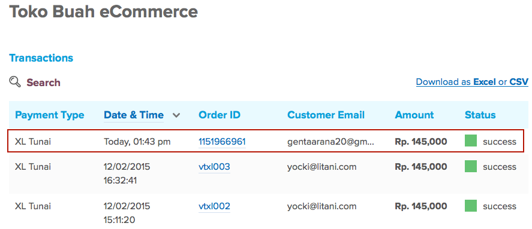
Daftar status transaksi yang tersedia di MAP untuk pembayaran XL Tunai adalah sebagai berikut:
| Transaction Status | Definisi |
|---|---|
| Pending | Transaksi belum diselesaikan dan akan menghasilkan status Pending. Ketika pelanggan menyelesaikan pembayaran, status akan berubah menjadi 'success'. |
| Success | Transaksi diterima dan sudah diproses untuk settlement. Beralih ke Penggunaan Dashboard untuk mengetahui lebih lanjut tentang Settlement. |
| Failure | Transaksi Failure dapat diakibatkan oleh: 1. Transaksi ditolak oleh Bank. 2. Transaksi Pending belum dibayar dan sudah melewati masa berlaku. |
BBM Money
Contoh Notifikasi HTTP untuk transaksi BBM Money yang berhasil:
{
"status_code": "201",
"status_message": "Success, BBM transaction is successful",
"transaction_id": "6473c4e2-1300-4ac7-b8f5-7abac12cd225",
"order_id": "order1521",
"payment_type": "bbm_money",
"transaction_time": "2015-04-21 11:02:04",
"transaction_status": "pending",
"permata_va_number": "8778001554702840",
"gross_amount": "200000.00"
}
Info:
Note:
Untuk informasi lebih lanjut mengenai respon pembayaran BBM Money silahkan mengalih ke sini.
Status Notifikasi HTTP(S) POST Yang Tersedia
| transaction_status | Definisi |
|---|---|
| pending | Transaksi belum terproses dan masi menunggu untuk diselesaikan. |
| cancel | Transaksi telah dibatalkan. Nomor BBM Account sudah tidak valid. |
| expire | Transaksi belum diselesaikan setelah waktu berlaku, Nomor BBM Account sudah tidak valid. |
| settlement | Dana transaksi berpindah dari akun pelanggan ke akun merchant. |
Status Transaksi Merchant Admin Portal(MAP)
Merchant dapat memeriksa status transaksi melalui menu Transaction di MAP.
Contoh transaksi status yang sukses untuk pembayaran BBM Money: 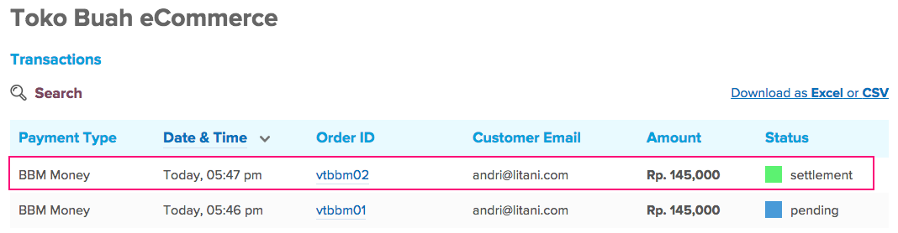
Daftar status transaksi yang tersedia di MAP untuk pembayaran BBM Money adalah sebagai berikut:
| Transaction Status | Definisi |
|---|---|
| Pending | Transaksi belum diselesaikan dan akan menghasilkan status Pending. Ketika pelanggan menyelesaikan pembayaran, status akan berubah menjadi 'success'. |
| Success | Transaksi diterima dan sudah diproses untuk settlement. Beralih ke Penggunaan Dashboard untuk mengetahui lebih lanjut tentang Settlement. |
| Failure | Transaksi Failure dapat diakibatkan oleh: 1. Transaksi ditolak oleh Bank. 2. Transaksi Pending belum dibayar dan sudah melewati masa berlaku. |
Mandiri Bill Payment
Contoh Notifikasi HTTP untuk transaksi Mandiri Bill Payment yang berhasil:
{
"status_code": "201",
"status_message": "Success, Mandiri Bill transaction is successful",
"transaction_id": "0b53c7dce63c4bbca3716b1ca5c925c7",
"order_id": "1421816431",
"payment_type": "echannel",
"transaction_time": "20150121 12:00:31",
"transaction_status": "pending",
"biller_code": "70012",
"bill_key": "000857123456",
"gross_amount": "400000.00"
}
Info:
Note:
Untuk informasi lebih lanjut mengenai respon pembayaran Mandiri Billpayment, silahkan mengalih ke sini.
Status Notifikasi HTTP(S) POST Yang Tersedia
| transaction_status | Definisi |
|---|---|
| pending | Transaksi belum terproses dan masih menunggu untuk diselesaikan. |
| cancel | Transaksi telah dibatalkan. Nomor Mandiri Bill sudah tidak valid. |
| expire | Transaksi belum diselesaikan setelah waktu berlaku. Nomor Mandiri Bill sudah tidak valid. |
| settlement | Dana transaksi berpindah dari akun pelanggan ke akun merchant. |
Status Transaksi Merchant Admin Portal(MAP)
Merchant dapat memeriksa status transaksi melalui menu Transaction di MAP.
Contoh transaksi status yang sukses untuk pembayaran Mandiri Bill Payment:

Daftar status transaksi yang tersedia di MAP untuk pembayaran Mandiri Bill Payment adalah sebagai berikut:
| Transaction Status | Definisi |
|---|---|
| Pending | Transaksi belum diselesaikan dan akan menghasilkan status Pending. Ketika pelanggan menyelesaikan pembayaran, status akan berubah menjadi 'success'. |
| Success | Transaksi diterima dan sudah diproses untuk settlement. Beralih ke Penggunaan Dashboard untuk mengetahui lebih lanjut tentang Settlement. |
| Failure | Transaksi Failure dapat diakibatkan oleh: 1. Transaksi ditolak oleh Bank. 2. Transaksi Pending belum dibayar dan sudah melewati masa berlaku. |
Indomaret
Contoh Notifikasi HTTP untuk transaksi Indomaret yang berhasil:
{
"status_code": "201",
"status_message": "Success, CSTORE transaction is successful",
"transaction_id": "0b53c7dce63c4bbca3716b1ca5c925c7",
"order_id": "vtindomrt01",
"payment_type": "cstore",
"transaction_time": "20150121 12:00:31",
"transaction_status": "pending",
"payment_code": "741122334455",
"gross_amount": "145000.00"
}
Status Notifikasi HTTP(S) POST Yang Tersedia
| transaction_status | Definisi |
|---|---|
| pending | Transaksi belum terproses dan masi menunggu untuk diselesaikan. |
| cancel | Transaksi telah dibatalkan. Nomor kode pembayaran Indomaret sudah tidak valid. |
| expire | Transaksi belum diselesaikan setelah waktu berlaku. Nomor kode pembayaran Indomaret sudah tidak valid. |
| settlement | Dana transaksi berpindah dari akun pelanggan ke akun merchant. |
Status Transaksi Merchant Admin Portal(MAP)
Merchant dapat memeriksa status transaksi melalui menu payments di MAP.
Contoh transaksi status yang sukses untuk pembayaran Indomaret:

Daftar status transaksi yang tersedia di MAP untuk pembayaran Mandiri Bill Payment adalah sebagai berikut:
| Transaction Status | Definisi |
|---|---|
| Pending | Transaksi belum diselesaikan dan akan menghasilkan status Pending. Ketika pelanggan menyelesaikan pembayaran, status akan berubah menjadi 'success'. |
| Settlement | Transaksi diterima dan sudah diproses untuk settlement. Beralih ke Penggunaan Dashboard untuk mengetahui lebih lanjut tentang Settlement. |
| Failure | Transaksi Failure dapat diakibatkan oleh: 1. Transaksi ditolak oleh Bank. 2. Transaksi Pending belum dibayar dan sudah melewati masa berlaku. |
Indosat Dompetku
Contoh Notifikasi HTTP untuk transaksi Indosat Dompetku yang berhasil:
{
"status_code": "200",
"status_message": "Veritrans payment notification",
"transaction_id": "0b7696f1-f9ca-4f4b-a389-ede2c2dddb5c",
"order_id": "vtdompetku03",
"payment_type": "indosat_dompetku",
"transaction_time": "2015-06-24 11:20:24",
"transaction_status": "settlement",
"signature_key": "73c70c8354e0705a16bd5d47d0ab3029a70b79bef0fe3b29161557110205d3679f0ea177101f56fe6313a887f340be7d302750ce8a4e0f67753c70548159895e",
"gross_amount": "145000.00"
}
Info:
Note:
Untuk informasi lebih lanjut mengenai respon pembayaran Indosat Dompetku, silahkan mengalih ke sini.
Status Notifikasi HTTP(S) POST Yang Tersedia
| transaction_status | Definisi |
|---|---|
| deny | Transaksi Indosat Dompetku ditolak oleh Indosat. |
| settlement | Dana transaksi berpindah dari akun pelanggan ke akun merchant. |
Status Transaksi Merchant Admin Portal(MAP)
Merchant dapat memeriksa status transaksi melalui menu payments di MAP.
Contoh transaksi status yang sukses untuk pembayaran Indosat Dompetku: 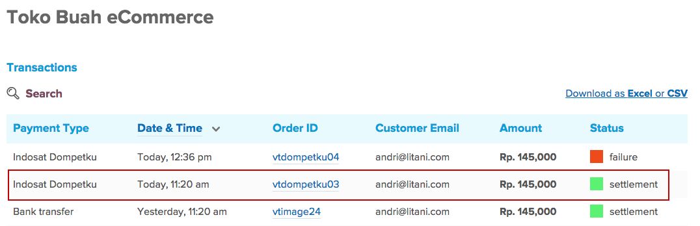
Daftar status transaksi yang tersedia di MAP untuk pembayaran Indosat Dompetku adalah sebagai berikut:
| Transaction Status | Definisi |
|---|---|
| Settlement | Transaksi berhasil dan sudah diproses |
| Failure | Transaksi Failure karena ditolak oleh provider. |
Untuk informasi lebih lanjut mengenai status transaksi yang ditunjukkan oleh MAP, silahkan beralih ke sini.
Menangani HTTP(S) Notifikasi
Berikut adalah contoh kode untuk menerima HTTP (POST) dan JSON object menggunakan Library Veritrans-PHP.
File ini adalah file PHP yang akan di eksekusi ketika URL endpoint notifikasi http://sneekers.com/payment/notification diakses.
<?php
require_once('Veritrans.php');
Veritrans_Config::$isProduction = false;
$notif = new Veritrans_Notification();
$transaction = $notif->transaction_status;
$type = $notif->payment_type;
$order_id = $notif->order_id;
$fraud = $notif->fraud_status;
if ($transaction == 'capture') {
// For credit card transaction, we need to check whether transaction is challenge by FDS or not
if ($type == 'credit_card'){
if($fraud == 'challenge'){
// TODO set payment status in merchant's database to 'Challenge by FDS'
// TODO merchant should decide whether this transaction is authorized or not in MAP
echo "Transaction order_id: " . $order_id ." is challenged by FDS";
}
else {
// TODO set payment status in merchant's database to 'Success'
echo "Transaction order_id: " . $order_id ." successfully captured using " . $type;
}
}
}
else if ($transaction == 'settlement'){
// TODO set payment status in merchant's database to 'Settlement'
echo "Transaction order_id: " . $order_id ." successfully transfered using " . $type;
}
else if($transaction == 'pending'){
// TODO set payment status in merchant's database to 'Pending'
echo "Waiting customer to finish transaction order_id: " . $order_id . " using " . $type;
}
else if ($transaction == 'deny') {
// TODO set payment status in merchant's database to 'Denied'
echo "Payment using " . $type . " for transaction order_id: " . $order_id . " is denied.";
}
?>
Info:
Info:
Untuk keamanan, jika Merchant menggunakan Veritrans_Notification seperti pada contoh di Library PHP Veritrans, proses challenge status sudah dilakukan.
- « Sebelumnya: Langkah Awal : Library & Plugin
- Selanjutnya: VT-Web : Fitur Tambahan »